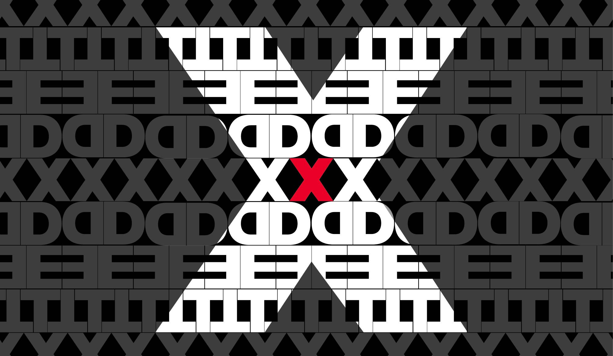

At a TED conference, the world's leading thinkers and doers are asked to give the talk of their lives in 18 minutes or less. TED speakers have included Roger Ebert, Sheryl Sandberg, Bill Gates, Elizabeth Gilbert, Benoit Mandelbrot, Philippe Starck, Ngozi Okonjo-Iweala, Brian Greene, Isabel Allende and former UK Prime Minister Gordon Brown.
On TED.com, talks from TED conferences are shared with the world for free as TED Talks videos. A new TED Talk is posted every weekday. Through the Open Translation Project, TED Talks are subtitled by volunteers worldwide. Through our distribution networks, TED Talks are shared on TV, radio, Netflix and many websites.
The TEDx initiative grants free licenses to people around the world to organize TED-style events in their communities with TED Talks and live speakers. Selected talks from these events are also turned into TED Talks videos.
The annual TED Prize grants $1 million to an exceptional individual with a wish to change the world. The TED Fellows program helps world-changing innovators from around the globe to become part of the TED community and, with its help, amplify the impact of their remarkable projects and activities. TED-Ed creates short video lessons by pairing master teachers with animators, for use in classroom instruction or independent learning.
For information about TED's upcoming conferences, visit ted.com/registration